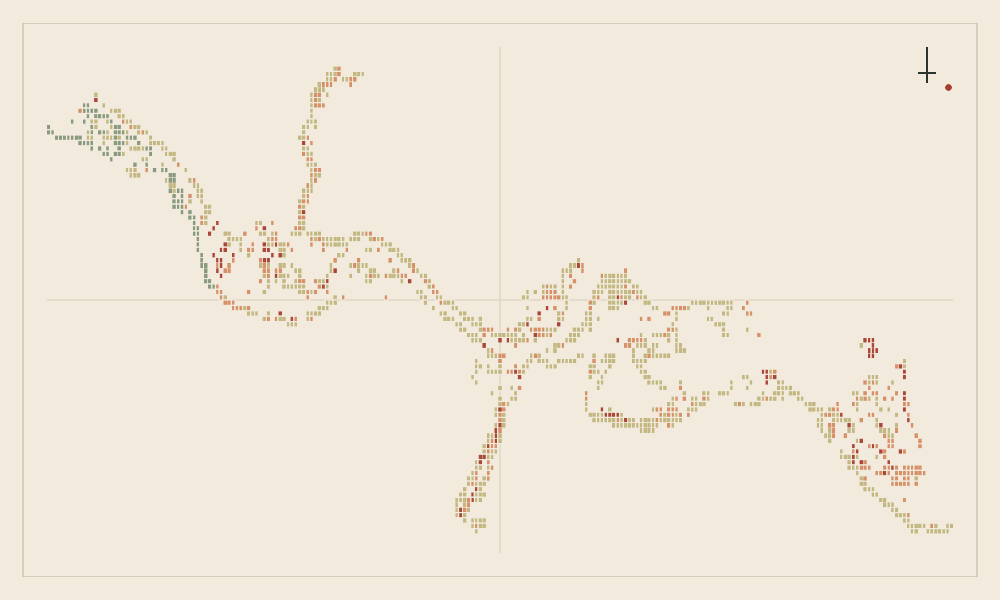

Urban mobility & accessibility
Pedestrian and transport network analysis, accessibility indices, and suitability models built with ArcGIS Network Analyst and pgRouting.
GIS & urban data analyst · Madrid, Spain
I’m Gideon, a GIS and urban data analyst in Madrid. I use spatial analysis to make questions of mobility, access and climate resilience clearer — and more useful to the people shaping cities.
Open to GIS, urban mobility & smart-cities roles across Madrid and the EU

Facts from the featured academic studies
SELECTED WORK / 2025—26
APPROACH
From street networks to climate exposure, I bring geospatial methods together with clear communication for public-interest decisions.
Pedestrian and transport network analysis, accessibility indices, and suitability models built with ArcGIS Network Analyst and pgRouting.
NDVI and land-cover change detection, solar radiation and shading models, and climate-risk analysis from satellite and LiDAR data.
Technical reports and interactive web maps that translate spatial analysis into evidence public administrations can act on.
INQUIRIES / COLLABORATION
I’d be glad to talk through a project, a map, or a role in urban mobility and spatial analysis.